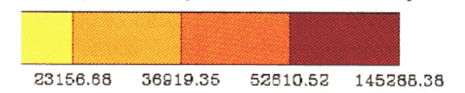
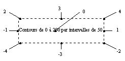

1. Introduction
Coupe est un outil graphique de visualisation de données
au format BIMG ou DIMG basé sur la librairie de fonctions NCAR Graphics.
Comme son homologue Chart il permet de représenter l'information sous forme de dessin couleur,
d'isocontours et/ou de vecteurs et possède quelques options de texte.
La plupart des options de Chart sont valables pour coupe, en particulier en ce qui concerne
la gestion des couleurs, des contours etc... D'autres options sont spécifiques à Coupe et nous les décrirons particulierement ici.
Coupe est divisé en plusieurs blocs, indépendants
les uns des autres et possédant chacun leur entrée de données.
Actuellement, il existe deux blocs qui traitent les couleurs et les isocontours.
Il existe aussi un autre bloc qui s'occupe du texte. Chaque bloc produit
une partie de dessin qui sera assemblée aux autres pour créer
le dessin final.
Chaque entrée peut accepter un fichier de données, un
fichier masque et un fichier grille. Comme chaque bloc est indépendant,
des données de masque et de grilles différentes peuvent être
spécifiées à chaque entrée. Les seules restrictions
sont qu'une zone commune doit être couverte par l'ensemble des fichiers
de données et que les fichiers de grille et de masque doivent avoir
la même taille que les fichiers de données auxquels ils s'appliquent.
Référez-vous à la section 7
pour plus de détails sur le format des fichiers.
Les fichiers de données et les options sont fournis sur la ligne
de commande lors de l'appel de coupe, ou peuvent se trouver dans
un fichier de configuration. Les options relatives aux couleurs débutent
toutes par clr, aux contours par cnt . Par exemple, pour
une coupe couleur des données du fichier topex.bimg, on taperait
la ligne de commande suivante :
coupe -clrdata topex.bimg
Voici un bref aperçu des différentes possibilités
de coupe :
| Couleur : |
par défaut, coupe utilise une palette de couleur
interne, qui définit la couleur des isocontours, de la bathymétrie
etc. Il est possible de définir sa propre palette et de la fournir
à
coupe. Voir la section 4 à
ce sujet.
Pour colorer les données, coupe calcule des limites qui
serviront à déterminer la couleur de chaque point selon sa
valeur. Il existe deux méthodes de calcul des limites (linéaire
et égalisée) et il est aussi possible d'imposer les limites
à l'aide d'un fichier. (voir section 4) |
| Isocontours : |
Des isocontours sont automatiquement tracés dès
que des données sont fournies au bloc. Il est possible de choisir
le nombre d'isocontours tracés, l'intervalle qui les sépare,
ainsi que leur valeur. Plusieurs autres options sont disponibles pour modifier
les line labels ainsi que le texte d'information. (voir section
5) |
| Bathymétrie : |
Coupe trace automatiquement la bathymétrie sur les données.
il est possible de ne pas la tracer ou de ne tracer que son contour. D'autres
options permettent de contrôler le tracé des méridiens,
de ne dessiner qu'une partie des données, etc. (voir section
3) |
| Texte : |
10 chaînes de caractères peuvent être
ajoutées au dessin. Il est possible de sélectionner la taille
des caractères ainsi que leur police. Coupe suppose aussi
la plupart des options de PLOTCHAR (module de NCAR Graphics). |
| Ajouts en surimpression |
Possiblité d'ajouter des tracés de lignes ou de marqueurs
en surimpression sur une carte |
Les sections suivantes décrivent en détail les options
associées à chaque bloc, ainsi que les différents
formats de fichiers.
2.0 Options générales
Cette section décrit les quelques options qui s'appliquent à
l'ensemble du dessin et non à un seul bloc.
| -p fichier |
Indique la palette de couleurs à lire. Par défaut, coupe
crée une palette de 14 couleurs, et définit la couleur des
océans, des continents et des valeurs spéciales. Voir
la section 7.1 pour en savoir
plus sur les fichiers de palette. |
| -o fichier |
Sélectionne le nom du fichier de métacode à créer.
Par défaut, coupe crée un fichier nommé gmeta. |
| -rev |
Inverse les couleurs de background et de foreground. Utile surtout
pour obtenir un fond blanc pour imprimer sans avoir à modifier la
palette de couleurs. |
| -lev integer |
Sélectionne les couches à travers lesquelles on
desire couper.
Une virgule (,) sépare les couches énumérées
une à une, et un tiret (-) indique une série de couches.
Par exemple, pour dessiner les couches 1, 3, 5, 7, 8, 9, 10 :
-lev 1,3,5,7-10
0 indique à coupe de dessiner toutes les couches.
Attention : si des couches sont omises en énumérant
les couches avec des virgules, coupe
interpolera entre ces couches sans tenir compte des couches omises.
|
| -time integer |
Sélectionne le (les) pas de temps à dessiner. Il est
possible de spécifier plusieurs pas de temps à la fois, auquel
cas un seul fichier est créé avec plusieurs frames. Pour
obtenir plusieurs pas de temps, utilisez la même syntaxe que pour
-lev. |
| -mask fichier |
Permet de masquer une partie des données. Les points de grille
masqués sont remplacés par une valeur spéciale et
ne sont pas pris en compte lors des calculs. Cette option spécifie
le masque pour toutes les entrées de données et correspond
aux options -clrmask et-cntmask. |
| -maskopa fichier mask opa |
Idem à l'option mask mais travaille
avec un masque de type OPA,
ie
avec 0 sur terre et 1 sur mer. L'option
-mask, originale dans
coupe travaille avec un masque de 1
sur terre et 0 sur mer. |
| -grid fichier |
Permet de traiter des données dont la grille est irrégulière.
Cette option spécifie la grille pour toutes les entrées de
données et correspond aux options -clrgrid,
-cntgrid
et -bgrid. |
| -gridxyfichier |
Permet de spécifier un fichier grille
dans lequel, la latidude et la longitude des points sont des fonctions
de (i,j). Cette option est une généralisation importante
de l'option -grid. Elle peut d'ailleurs être utilisée
systématiquement en remplacement de -grid. Quand on l'utilise,
les couleurs sont traitées par les routines de contourage, et non
plus par les "color cell array" (option -clriso activée par
défaut). |
| -system "command string" |
Fait un appel system depuis la ligne de commande
de coupe.
Passe la commande dès la lecture de l'option.
On peut donc mettre autant de -system qu'on le désire. Si
un fichier résultant de la commande doit être utilisé
dans des options -clrdata, -cntdata etc, penser à
mettre l'option -system avant l'option -clrdata ....
Cette option permet de faire des prétraitements
de fichiers, par exemple. |
| -team, -noteam |
Affiche, ou n'affiche pas en bas à droite de la fenêtre
le nom de l'équipe (MEOM-LEGI) |
| -dat, -nodat |
Affiche ou non la date à laquelle le dessin a été
effectué en bas à doite de la fenêtre de dessin. |
3.0 Configuration
de la carte
Au départ, coupe a été
développé pour visualiser des données cartographiques,
c'est pourquoi la
bathymétrie est tracée par défaut
avec les données .si un fichier de bathymétrie est spécifié.
Si vos données ne sont pas cartographiques, l'option qui vous intéresse
est -nomap, décrite ci-dessous.
| -b |
Indique de quel fichier sera lue la bathymétrie. (format bimg) |
| -bgrid |
grille sur laquelle on désire projeter la bathymétrie.(voir
aussi l'option -grid) |
| -zoom |
Indique la région des données à
dessiner. Cette région doit être commune à tous les
fichiers donnés en argument. Par défaut, la région
maximale est dessinée.
Syntaxe : -zoom xmin xmax ymin ymax |
| -pts |
Indique les points entre lesquels on désire effectuer la coupe.
L'ordre des points détermine le sens de la coupe, qui se fait toujours
du point 1 au point 2.
syntaxe : -pts xl x2 yl y2 |
| -map / -nomap |
Dessine ou non la bathymétrie sur la coupe. Le relief est rempli
avec la couleur définie dans la palette à l'index 2. (défaut
-map) |
| -outl |
Trace seulement la bathymétrie. |
| -perim / -noperim |
Dessine ou non un cadre autour de la carte. (défaut -perim) |
| -grad / -nograd |
Dessine ou non une graduation sur le cadre. (défaut -grad)
note : -noperim enlève automatiquement la graduation. |
| -noxlab |
Pas de labels sur l'axe des x. (longitude) |
| -noylab |
Pas de labels sur l'axe des y. (latitude) |
| -nozlab |
Pas de labels sur l'axe des z. (profondeur) |
| -xyplot |
Détermine l'emplacement de la carte sur le plot frame NCAR.
Les coordonées doivent se trouver entre 0.0 et 1.0.
Syntaxe : -xyplot xmin xmax ymin ymax |
| -xybat |
Détermine l'emplacement de la bathymétrie sur le ploiframe
NCAR. Les coordonnées doivent se trouver entre 0.0 et 1.0. Par défaut
ces
coordonnées sont les mêmes que pour xyplot. La syntaxe
est la même que pour -xyplot. |
-xstep int:subd:larg
-ystep int:subd:larg
-zstep int:subd:larg |
Détermine l'intervalle des graduations sur l'axe des longitudes,
l'axe des latitudes ou l'axe vertical. Il est possible de spécifier
des subdivisions, ainsi que la largeur du trait des divisions principales.
Syntaxe : -xstep int:subd:larg
où :
-
int - intervalle
-
subd - nombre de subdivisions
-
larg - largeur du trait des divisions principales
par exemple, pour obtenir une division tous les deux degrés
et une subdivision aux degrés :
-xstep 2:2
pour obtenir une subdivision tous les demi-degrés, et
un trait deux fois plus large que les divisions principales :
-xstep 2:4:2 |
| -cslab ?? |
Détermine la tailles des caractères des labels sur les
axes |
| -xgrid/-ygrid |
Sélectionne le tracé des lignes horizontales ou verticales
sur le dessin. L'intervalle employé est celui spécifié
par -xstep , -ystep
ou -zstep, incluant les subdivisions. |
| -pmin, -pmax |
Ces options permettent de modifier les profondeurs minimale et maximale.
Par défaut. -pmin indique la surface et -pmax le fond.
Les profondeurs sont exprimées par des nombres négatifs,
0 étant la surface. |
-noxaxis
-noyaxis |
Comme les coupes peuvent être diagonales, deux axes horizontaux
sont tracés pour représenter la longitude et la latitude.
-nolat
et
-nolon
permettent de ne pas tracer ces axes. |
-xaxisy
-yaxisy |
Par défaut, les axes horizontaux sont tracés sous
la coupe, à une certaine distance du plot frame. Si vous désirez
modifier le plot frame, ou
simplement déplacer un axe, -ylat et -ylon déterminent
leur position verticale. La position horizontale ne peut être modifiée,
les axes seront toujours alignés avec la coupe. |
-xaxist string
-yaxist string |
Texte précédant l'axe des x (longitude)
Texte précédant l'axe des y (atitude) |
4.0 Couleurs
Toutes les options se rapportant à la couleur commence par le préfixe
clr.
Si aucune palette de couleurs n'est spécifiée, coupe
utilisera une palette interne, définissant le fond blanc, le texte
et les lignes noires, ainsi que la bathymétrie marron.
Selon le nombre de couleurs, 80 au maximum, coupe calcule des
limites, qui sont les valeurs min et max entre lesquelles une certaine
couleur est attribuée à une donnée. Les limites peuvent
être calculées selon deux méthodes ou être lues
dans un fichier. (voir les options -clrmet
et -clrlim)
4.1 Fichiers
| -clrdata fichier |
Spécifie le fichier de données à colorer.
Indication sur l'écran (std output) du
minimum et du maximum du champ à tracer. Si le champ est constant,
passe automatiquement en -clrmet 1. |
| -clrmask fichier |
Permet de remplacer une partie des données. Les points de grille
masqués sont remplacés par une valeur spéciale et
ne sont pris pas en compte lors des calculs. (voir aussi -mask) |
| -clrgrid fichier |
Permet de traiter des données dont la grille est irrégulière.
Le fichier de grille contient coordonnées de chaque point spécifié
par -clrdata. (voir aussi -grid) |
| -clrlim fichier |
Les limites seront lues dans ce fichier au lieu d'être calculées.
Le fichier de limites doit définir au minimum le nombre de couleurs
dans la palette plus 1. Si plus de limites
sont définies, elles ne seront pas utilisées. |
| -clrlout fichier |
Lorsque les limites sont calculées par coupe, cette option
permet de les récupérer dans un fichier. Attention, cette
option écrasera le fichier donné en argument s'il existe
déjà. |
4.2 Options
de calcul
| -clrmet [1 ou 2
] |
Deux méthodes de calcul des limites sont disponibles.
Méthode 1 : coupe trouve les valeurs minimale et
maximale du champ de données et divise la plage de valeurs par le
nombre de couleurs (méthodes linéaire).
Méthode 2 : coupe procède par égalisation
; de façon à attribuer une quantité égale de
points de grille à chaque couleur (méthode égalisée).
Il est aussi possible de forcer les limites à certaines
valeurs au moyen d'un fichier. (voir aussi l'option -clrmin) |
| -clrexp real |
Lorsque des données sont d'un ordre de grandeur élevé
ou très petit, cela peut causer des problèmes d'espace sous
la barre de palette. -clrexp utilise une puissance de dix par laquelle
coupe
divisera les nombres avant de les afficher. Un format approprié
peut alors être utilisé (voir l'option -format,
section 6.2) et l'échelle peut être indiquée sous la
barre de palette au moyen de l'option -string
(section 6.2). Par exemple :

pourrait être modifié avec les options :-clrexp3
-format PALETTE f10.2 -string 0.95 0.6 1 1 "x10|S|3"
 |
| -clrmin real
-clrmax real |
Valeurs minimale et maximale entre lesquelles on désire que
le calcul des limites s'effectue. Les autres valeurs satureront aux couleurs
extrêmes de la palette. Il est possible de ne préciser que
-clrmin ou -clrmax. |
| -clrmsk |
Permet de masquer les valeurs en dehors des limites
spécifiées par clrmin et clrmax. Les valeurs
inférieures à
clrmin sont de la couleur clrmin
et les valeurs supérieures à
clrmax sont de la couleur
de clrmax. |
4.3 Autres options
| -clriso |
La couleur est normalement produite en colorant chaque pixel de la
carte. Cette méthode est rapide lors des calculs, mais a comme inconvénient
de créer d'énormes fichiers postscript à l'impression.
L'option -clriso indique à coupe de procéder
par remplissage d'isocontours. Le temps de calcul est multiplié
par quatre ou cinq, mais le résultat est plus lisse et le postscript
créé peut être jusqu'à 30 fois plus petit. |
| -clrpal / -clrnopal |
Affiche ou non une barre de palette. (-clrpal est l'option par
défaut) |
| -clrxypal |
Détermine le rectangle dans lequel sera dessinée la barre
de palette. Le cadre est donné
en coordonnées "plot frame", entre 0.0 et 1.0.
Syntaxe : -clrxypal xmin xmax ymin ymax |
| -clrnocol |
Cette option empêche le tracé des données colorées.
Surtout utilisée en interne par coupe pour les
fichiers de configuration. |
| -clrdim integer |
Lorsque le fichier de données comporte plus d'une dimension,
cette option spécifie la dimension à dessiner. Voir la section
7.3 sur le format BIMG. -clrdim sélectionne une
dimension parmi ndim. |
| -vertpal |
Permet de tracer une palette de couleur dans
le sens vertical au lieu du sens horizontal (par défaut). Dans ce
cas les valeurs par défaut de xyplot et de xypal sont
modifiées automatiquement pour éviter les chevauchements
entre palette et dessin. |
| -lbpal integer |
Permet de spécifier la position des labels
dans les palettes, verticales ou horizontales
-
0 : pas de labels
-
1 : labels en dessous ou à droite (défaut)
-
2 : labels au dessus ou à gauche
-
3 : des deux cotés
|
| -greyscale |
Utilise une palette interne de 11 niveaux de
gris au lieu de la palette par défaut à 14 couleurs. |
| -jetpal |
Permet le choix d'une palette de couleur de type
JET avec un nombre de couleurs spécifié, sans passer par
un fichier palette. |
| -zebre integer |
Permet le choix d'une palette de couleur de type
JET mais avec alternance de bandes noires. |
| -palout |
Cette option permet de sortir le fichier palette
(au bon format) correspondant à la palette utilisée. Utile
avec l'option -jetpal puisqu'elle permet de retoucher manuellement
une palette. Le fichier de sortie est en standard le fichier used_palette. |
| -prev |
Palette reverse, renverse les couleurs d'une
palette, aussi bien par défaut que lue dans un fichier. |
5.0 Isocontours
Toutes les options se rapportant aux isocontours commencent par le préfixe
cnt.
Par défaut coupe dessine automatiquement des isocontours
dès que les données sont entrées avec -cntdata.
Le nombre d'isocontours et leurs valeurs sont choisis par NCAR pour donner
un beau résultat (nice value). Il est possible, avec les options
décrites dans cette section, de modifier ces valeurs par défaut
pour obtenir exactement les isocontours désirés.
5.1 Fichiers
| -cntdata fichier |
Spécifie le fichier de données.
Modification de la lecture dans le cas où
la spval est nulle. Dans ncarg3.2, spval=0 indique que l'on
n'utilise pas les
spval. Il y avait donc problème, corrigé
en remplaçant dans ce cas les 0 par une spval par défaut. |
| -cntmask fichier |
Permet de masquer une partie des données. Les points de grille
masqués sont remplacés par une valeur spéciale et
ne sont pas pris en compte lors des calculs. (voir aussi l'option -mask) |
| -cntgrid fichier |
Permet de traiter des données dont la grille est irrégulière.
Le fichier de grille contient les coordonnées de chaque point du
fichier spécifié par -cntdata. (voir aussi l'option
-grid) |
| -cntlim fichier |
La valeur exacte de chaque isocontour est lue dans ce fichier. Le nombre
d'isocontours dépend du nombre de valeurs de ce fichier. |
| -cntlout fichier |
Lorsque les isocontours sont calculés par coupe, cette
option permet de les récupérer dans un fichier. Attention,
cette option écrasera le fichier donné en argument s'il existe
déjà. |
5.2 Modification des isocontours
| -cntnum integer |
Détermine le nombre d'isocontours. NCAR calculera l'intervalle
nécessaires pour obtenir N isocontours entre les valeurs maximale
et minimale contenue dans les données. |
| -cntint real |
Détermine l'intervalle entre les isocontours. Les isocontours
seront tracés à partir de la valeur minimale trouvée
dans les données. |
| -cntmin real |
valeur minimale à considérer lors des calculs d'isocontours |
| -cntmax real |
valeur maximale à considérer lors des calculs d'isocontours |
5.3 Line Labels
Note : La plupart des options suivantes ne sont, en fait, qu'un accès
direct à certaines constantes de NCAR Graphics. Veuillez vous référez
au document «contouring adn Mapping Tutorial » pp. 393 à
416 pour plus de détails. Lorsqu'une option correspond directement
à une constante NCAR, le nom de la constante est indiquée.
| -cntlbc integer |
Label Box Color index (LBC).
Détermine l'index de couleur des boîtes entourant les
line labels. |
| -cntllb integer |
Line Label Box flag (LLB). Valide pour LLB égal à 2 ou
3.
Détermine le type de cadre autour des line labels.
-
0 - aucun cadre
-
1 - seul un périmètre est dessiné autour des
labels. (même couleur que le texte)
-
2 - une boîte de couleur (index LBC) est dessinée autour
des labels.
-
3 - 1 et 2, soit une boîte de couleur avec un cadre.
|
| -cntllp integer |
Line Label Positioning (LLP).
Détermine si oui ou non des line labels seront dessinés
et de quel type.
0 =aucun label,
2 = défaut
(voir page 406 du document « Contouring and Mapping Tutorial »
pour plus de détails). |
| -cntlw real |
Largeur du trait des isocontours. Deux points, suivis d'une valeur,
indiquent la largeur du trait des isocontours étiquetés.
Défaut 1. |
| -cntlabc integer |
Détermine l'index de couleur du texte des line labels. (une
couleur spéciale dont l'index est entre 10 et 19 peut être
utilisée, voir section 7.1) |
5.4 Texte d'information
Le texte d'information est la chaîne de caractères qui
indique habituellement les valeurs des isocontours minimum et maximum,
ainsi que l'intervalle entre les isocontours. Cette chaîne peut être
modifiée et plusieurs variables peuvent être utilisées.
Voir à ce sujet la page 404 du document « Contouring and Mapping
Tutorial ».
| -cntilb integer |
Information Label Box flag. (ILB)
Choisit le type de cadre autour du texte d'information
-
0 - aucun cadre
-
1 - seul un périmètre est dessiné autour du texte.
(même couleur que le texte.)
-
2 - une boîte de couleur (index LBC) est dessinée autour du
texte.
-
3 - 1 et 2, soit une boîte de couleur avec un cadre.
|
| -cntilc integer |
Index Label Color (ILC)
Index de la couleur du texte d'information. (Une couleur spéciale
dont l'index est entre 10 et 19 peut être utilisée, voir section
7.1) |
| -cntilxy real real |
Coordonnées en X et Y du texte d'information, exprimées
en unité « plot frame » entre 0.0 et 1.0.
Voir -cntilp ci-dessous pour savoir à quel point du texte
correspondent ces coordonnées. |
| -cntilp integer |
Information Label Positionning flag. (ILP)
Détermine le point décrit par les coordonnées
de -cntilxy. (défaut 4)
 |
| -cntilt string |
Information Label Text (ILT)
Chaîne du texte d'information. Plusieurs variables peuvent être
utilisées dans cette chaîne, référez-vous à
la page 404 du document « Contouring and Mapping Tutorial ».
défaut : Contours de $CMN$ a $CMX$ par intervalles de
$CIU$ |
| -cntils real |
Permet de spécifier la taille des caractères
utilisés dans le texte d'information des labels. La valeur par défaut
est de 0.012. |
| -cntlls real |
Permet de spécifier la taille des caractères
utilisés dans les labels d'isocontours. La valeur par défaut
est de 0.010. |
5.5 Autres options
| -cntdash |
Force les lignes de contour négatives à
être en tirets. |
| -cntshade |
Grise les contours négatifs d'un contourage. Cette option peut
s'appliquer avec ou sans -cntdash, qu'elle complète. |
| -cntlev integer |
Permet de spécifier les niveaux du fichier
spécifié par -cntdata à
tracer. |
| -cntexp real |
Lorsque les données sont d'un ordre de grandeur
élevé ou très petit, cela peut causer des problèmes
d'affichage des labels -cntexp est une puissance de dix par
laquelle coupe divisera les nombres avant de les afficher. Un format
approprié peut être alors utilisé. (voir l'option -format,
section 7.2) |
| -cntcwm real |
Character Width Multiplier (CWM)
Multiplie la taille des caractères associés
aux isocontours. Affecte les line labels ainsi que le texte d'information. |
| -cntdim |
Lorsque le fichier de données comporte plus d'une dimension,
cette option spécifie la dimension à dessiner. Voir la section
8.3 sur le format BIMG.
-cntdim sélectionne une dimension parmi ndim. |
| -cntrc1 real |
Regular Scheme Constant 1 (RC1).
Spécifie la distance entre le début d'un
isocontour et le premier label sur cet isocontour lorsque le mode de positionnement
des labels est 2 (LLP). Réduire cette valeur, ainsi que RC2,
augmente la quantité de labels sur le dessin. (défaut coupe
0.15, défaut NCAR 0.25) |
| -cntrc2 real |
Regular Scheme Constant 2 (RC2)
Spécifie la distance
entre les labels sur un même isocontour. Le positionnement et la
quantité de labels sur un dessin sont grandement affectés
par RC1 et RC2 lorsque LLP est 2. (défaut coupe 0.15, défaut
NCAR 0.25) |
Rappel : la couleur des isocontours est déterminée
par l'index 5 de la palette de couleur.
Si cette couleur n'est pas spécifiée dans la palette, les
contours seront de la couleur du foreground.
6. Texte
Jusqu'à 10 chaînes de caractères peuvent être
définies lors de l'appel de coupe. Il est aussi possible,
à l'intérieur de chaque chaîne, d'utiliser des variables
qui seront remplacées par des valeurs internes lors de la production
du dessin. On peut, par exemple, mettre dans un titre le numéro
de la couche tracée :
"Numéro de couche : @CLR_ICOU@"
Lorsque le titre est ajouté au dessin, la variable CLR_ICOU est
remplacée par le numéro de la couche. Il est possible de
créer des chaînes de caractères dont le contenu dépend
du fichier traité.
Il est aussi possible d'utiliser les caractères de commande reconnus
par la fonction PLCHHQ de NCAR. Le caractère de contrôle est
| (pipe en UNIX). Par exemple, pour obtenir l'effet suivant :
3.258x10-2 m2s2
On utiliserait la syntaxe suivante : "3.258x10|S|-2|N|m|S|2|N|s|S|2"
Dans cet exemple, S est la commande plotchar Superscript et N est la
commande de retour à la normale. Référez-vous au document
« Plotchar, a character-plotting package », section 3.10 Functions
Codes, pages 13 à 18 pour plus de détails.
7.1 Liste des variables
Voici la liste des variables auxquelles coupe donne accès.
Le nom de chaque variable débute par un préfixe décrivant
à quel fichier de données elle se rapporte. Pour utiliser
ces variables dans une chaîne de caractères, mettez simplement
son nom entre @.
| Entiers |
|
|
|
| COUCHE |
|
|
numéro de la couche |
| TSTEP |
|
|
pas de temps |
| CLR_NX |
CNT_NX |
VEC_NX |
nombre de points en X |
| CLR_NY |
CNT_NY |
VEC_NY |
nombre de points en Y |
| CLR_NZ |
CNT_NZ |
VEC_NZ |
nombre de couches |
| CLR_EXP |
CNT_EXP |
|
exposant (puissance de 10) |
| Réels |
|
|
|
| CLR_MIN |
CNT_MIN |
VEC_MIN |
valeur minimale |
| CLR_MAX |
CNT_MAX |
VEC_MAX |
valeur maximale |
| CLR_SPVAL |
CNT_SPVAL |
VEC_SPVAL |
valeur spéciale |
| CLR_DX |
CNT_DX |
VEC_DX |
degrés/points de grille en X |
| CLR_DY |
CNT_DY |
VEC_DY |
degrés/points de grille en Y |
| CLR_TIME |
CNT_TIME |
VEC_TIME |
champ H dans le BIMG |
| CLR_DEPTH |
CNT_DEPTH |
VEC_DEPTH |
profondeur de la couche |
| Texte |
|
|
|
| DATE |
|
|
date de création du dessin |
| CLR_STR1 |
CNT_STR1 |
VEC_STR1 |
record 1, BIMG |
| CLR_STR2 |
CNT_STR2 |
VEC_STR2 |
record 2, BIMG |
| CLR_STR3 |
CNT_STR3 |
VEC_STR3 |
record 3, BIMG |
| CLR_STR4 |
CNT_STR4 |
VEC_STR4 |
record 4, BIMG |
| CLR_JCNES |
CNT_JCNES |
VEC_JCNES |
traduit un jour CNES en texte |
7.2. Liste des options
| -string X Y S A string |
Ajoute une chaîne de caractères au dessin. Les paramètres
sont :
-
X, Y coordonnées entre 0.0 et 1.0 spécifiant
la position du texte.
-
S (size) taille des caractères. (1.0 = taille normale)
-
A (align) décrit à quelle extrémité du texte
correspond la position (X, Y) :
-1: côté gauche
0 : centre
1 : côté droit
-
string texte comportant au maximum 256 caractères.
(attention, tenir compte de la taille des variables)
|
| -format varfmt |
Modifie le format d'une variable numérique. Permet aussi de
contrôler le format de plusieurs éléments d'un dessin.
(voir liste ci-dessous).
-
var : nom de la variable dont on désire modifier le format.
-
fmt : format, de type fortran 77 standard. Les formats supportés
sont I, F et E.
Exemple, pour modifier le format des nombres apparaissant sous la barre
de palette :
-format PALETTE f5.2
En plus de pouvoir modifier le format de toutes les variables énumérées
plus haut, il est possible d'accéder aux formats des champs suivants
:
X_AXIS axe horizontal
Y_AXIS axe vertical
Z_AXIS axe vertical
PALETTE barre de palette |
note : pour éliminer complètement la graduation sur un
des axes, utilisez -noxlab ou -noylab.
| -font police |
Sélectionne la police de caractères qui sera utilisée
pour tout le dessin. Consultez le document « Plotchar - a character
plotting package » page 22 pour la liste des polices disponibles.
Les polices donnant les meilleurs résultats à l'impression
sont :
21 HELVETICA
22 HELVETICA-BOLD
23 TIMES-ROMAN
24 TIMES-BOLD
Il est à noter que la police peut être changée à
l'intérieur même d'une chaîne de caractères,
avec la commande Fn où n est un numéro de police. (les numéros
sont donnés dans la liste de la page 22 citée plus haut).
Par exemple, vous avez sélectionné la police HELVETICA et
vous désirez mettre un mot en bold dans une chaîne de caractères.
A l'appel de coupe :
-font HELVETICA
-string .2 .9 1. -1 ²un |F22|mot |F21|en bold²
donnera :
un mot en bold |
8. Ajouts
de lignes ou de caractères en surimpression
Il est possible de faire apparaître des lignes
ou des marqueurs en surimpression au dessus de la carte.
Pour écrire le nom d'un continent, pour
positionner un mouillage, ou pour définir une section hydrographique
par exemple.
| -overdata fichier |
Superpose à la carte des lignes polygonales
décrites dans fichier. Le format est très simple:
c'est un fichier ASCII, chaque ligne donnant la position d'un point en
longitude latitude. Si on désire plusieurs segments, il faut insérer
entre les segments, une ligne 9999 9999. |
| -overlw |
fixe l'épaisseur de trait pour les lignes
superposées (défaut 1). |
| -overmark fichier |
Superpose à la carte des marqueurs dont
la position est donnée dans fichier}. Même format de fichier
que pour -overdata. |
| -overmk integer |
spécifie le type de marqueur à
utiliser selon la norme GKS :
1 = .
2 = +
3 = *
4 = o
5 = X
Par défaut le marqueur est 4 (petit cercle). |
| -overmksc real |
spécifie la taille du marqueur. Par défaut,
1. |
| -overclr integer |
Donne l'index de couleur de la courbe en overlay,
index 1 étant le premier de la palette visible (ie indice 20 du
fichier palette). |
| -overmkclr integer |
Donne l'index de couleur des marqueurs en overlay,
index 1 étant le premier de la palette visible (ie indice 20 du
fichier palette). |
7. Formats des fichiers
Cette section décrit les formats de tous les fichiers qui peuvent
être donnés en entrée à coupe. Plusieurs
formats ont changé depuis la version 2.0, il est donc recommandé
de lire le texte « release notes » pour la mise à jour
des fichiers déjà existants.
7.1. Palette de couleurs
Un fichier de palette se divise en deux parties : les couleurs spéciales,
attribuées à des éléments du dessin tels que
les continents ou les océans, et les couleurs réservées
aux données, qui apparaîtront dans la barre de palette.
La définition d'une couleur comporte quatre éléments
: son index et les quantités de rouge, vert et bleu. L'index est
un nombre entre 0 et 99, alors que les autres valeurs doivent être
situées entre 0.0 et 1.0. Par exemple, pour définir l'index
10 comme étant du vert pur, on mettrait la ligne suivante dans le
fichier de palette :
10 0.0 1.0 0.0
Les index 0 à 19 sont réservés pour certains éléments
du dessin. Les index actuellement définis sont :
-
0 : background
-
1 : foreground
-
2 : continents
-
3 : valeur spéciale
-
4 : océans
-
5 : isocontours
-
6 : vecteurs
-
7 : contours des continents
Les autres index sont réservés pour des besoins futurs. Ils
peuvent être utilisés pour certaines options de coupe,
par exemple:
-cntilb Information Label Color
-cntlbc Label Box Color
Le reste des index, soit de 20 à 99, est utilisé pour
définir les couleurs attribuées aux données. Les index
doivent être définis dans un ordre croissant, mais il n'est
pas nécessaire de définir tous les index. Coupe interpole
automatiquement les couleurs entre les index qui ne sont pas consécutifs.
Par exemple, pour obtenir un dégradé de 10 couleurs variant
du noir au magenta:
20
|
0.0
|
0.0
|
0.0
|
29
|
1.0
|
0.0
|
1.0
|
Finalement, il est possible d'insérer des lignes blanches entre
les index et d'ajouter des lignes de commentaires commençant par
le caractère #. Il est aussi à noter que tout ce qui se trouve
à droite d'une définition de couleur n'est pas pris en compte.
Un fichier de palette pourrait donc se lire comme suit :
# Palette pour les fichiers EKE
|
000
|
0.0
|
0.0
|
0.0
|
background
|
001
|
1.0
|
1.0
|
1.0
|
foreground
|
002
|
0.5
|
0.5
|
0.5
|
continents
|
005
|
1.0
|
0.0
|
0.0
|
isocontours
|
# couleurs pour les données
|
020
|
2.3
|
4.4
|
1.2
|
|
021
|
4.2
|
2.2
|
5.8
|
|
7.2. Fichier de configuration
Plutôt que de toujours taper tous les arguments sur la ligne de commande,
il est possible de créer un fichier de configuration. La syntaxe
en est très simple, elle est la même que pour la ligne de
commande, la seule différence étant qu'il ne doit y avoir
qu'une seule option par ligne. Toutes les options peuvent être utilisées
dans un fichier de configuration, même les options telles que -clrdata.
L'option -s est utilisée pour indiquer à coupe
qu'il doit lire un fichier de configuration. D'autres options peuvent être
utilisées en même temps que -s sur la ligne de commande.
Les options sont lues de droite à gauche, et les dernières
options lues ont priorité. Par exemple, on peut créer un
fichier de configuration qui affiche les trois premiers records d'un fichiers
BIMG. Soit le fichier entete.conf :
-string 0.05 0.94 1-1 ²@CLR_STR1@²
-string 0.05 0.90 1-1 ²@CLR_STR2@²
-string 0.05 0.86 1-1 ²@CLR_STR3@²
On pourrait ensuite utiliser ce fichier lors de l'appel de coupe,
de la façon suivante :
coupe -s entete.conf -clrdata topex.bimg -zoom -82 -62 35 45
Comme dans le cas d'une palette, les lignes blanches et les lignes de commentaires
commençant par # sont acceptées. Par contre, il ne faut rien
mettre à la fin d'une ligne d'option. Voici un exemple de fichier
de configuration qui ajoute la bathymétrie et un titre, ainsi que
le type d'unités à un tracé d'isocontours. (appelons
le bathy.set)
# fichier de configuration
-clrdata bathy.bimg
-p psi.2.pal
-string 0.05 0.90 2 -1 ²Isocontours sur fond de bathymetrie²
-string 0.95 0.06 0.6 1 ²Unites : m|S|2|N|s|S|-1| x10|S|@CNT_EXP@²
Ce fichier pourrait être utilisé dans une commande telle que
:
coupe -cntdata topex.bimg -cntexp 4 -s bathy.set
7.3. Format BIMG
Un fichier BIMG est composé de deux parties principales : une entête
décrivant le contenu du fichier et les données décrites.
Une doc de Jean-Marc Molines est disponible si vous désirez une
description plus détaillée du format.
Les 6 premiers records forment l'entête.
| Records 1 à 4: |
character*80 |
| |
Quatre chaînes de caractères pouvant servir à décrire
le fichier. |
| Record 5: |
integer (6) |
| |
NX : nombre de points en X
NY : nombre de points en Y
NZ : nombre de couches
NT : nombre de pas de temps
NDIM : nombre de dimensions par couche (1-3)
ICOD : code identifiant le type de données. Utilisé pour
les configurations par défaut. (voir section
10) |
| Record 6 : |
real (5) |
| |
X1 : longitude du coin inférieur gauche
Y1 : latitude du coin inférieur gauche
DX : nombre de degrés par point de grille (longitude)
DY : nombre de degrés par point de grille (latitude)
SPVAL : valeur spéciale |
| Record 7 : |
real (NZ) |
| |
P(NZ) : tableau contenant la profondeur de chaque couche. |
Par la suite, le nombre de records dépend de NZ, NT et NDIM.
Voici un exemple de code FORTRAN pour créer un fichier BIMG.
Le fichier contiendra 4 couches de 2 dimensions, la résolution est
de un sixième de degré et la zone couverte s'étend
de -82°E à -2°E et de 20°N à 60°N.
implicit none
integer nxx, nyy, na
parameter (nxx=700, nyy=400, na=20)
integer k, i, j, t
integer couche
real vitesse_x(nxx, nyy, na)
real vitesse_y(nxx, nyy, na)
real prof(na)
character*80 record_str
integer nx, ny, nz, day, icod, ndim
real lonmin, latmin, dx, dy, spval
nx = 480
ny = 280
nz = 4
nt = 1
ndim = 2
icod = 1
lonmin = -82.0
latmin = 20.0
dx = 1.0/6.0
dy = 1.0/6.0
spval = 999999
prof(1) = 100.0
prof(2) = 300.0
prof(3) = 450.0
prof(4) = 4000.0
open(100, file=fileout, form='unformatted')
record_str = ?commentaire ligne 1'
write(100) record_str
record_str = ?commentaire ligne 2'
write(100) record_str
record_str = ?commentaire ligne 3'
write(100) record_str
record_str = ?commentaire ligne 4'
write(100) record_str
write(100) nx, ny, nz, nt, ndim, icod
write(100) lonmin, latmin, dx, dy, spval
write(100) (prof(couche), couche=1, nz)
do t=1, nt
write(100) t
do couche=1, nz
write(100) ((vitesse_x(i, j, couche), i=1, nx), j=1, ny)
write(100) ((vitesse_x(i, j, couche), i=1, nx), j=1, ny)
enddo
enddo
close(100)
Vous pouvez ensuite utiliser la commande bimgchk pour vérifier
l'entête du fichier que vous venez de créer.
7.4. Grille irrégulière
Une grille irrégulière est définie au moyen d'un fichier
BIMG comportant deux couches. La couche 1 contient la coordonnée
en X de chaque point et la couche 2 la coordonnée en Y. Il y a très
peu de champs à remplir pour créer un fichier grille, il
faut seulement définir NX, NY et NZ (NZ étant 2).
Pour être compatible avec un fichier de données, un fichier
grille doit contenir le même nombre de points en X et Y.
Note : actuellement, le type de grille supporté
est une grille semi-irrégulière, c'est-à-dire que
dx ne dépend que de i et dy ne dépend que de j. (voir la
figure ci-dessous)
Pour plus de détails sur ce type de grille,
référez-vous au document « Contouring and Mapping Tutorial
», Cp 3.4 Irregularly Spaced Data, page 226.
7.5. Masque
Un fichier masque est utile lorsqu'on désire qu'une région
soit ignorée par coupe, sans avoir à remplacer cette
région par spval dans le fichier. Un fichier masque est un
fichier BIMG ne comportant qu'une seule couche. Pour être compatible
avec un fichier de données, un fichier masque doit contenir le même
nombre de points en X et Y.
Un fichier masque contient la valeur 0 ou 1 à chaque point de
grille. Lors de la lecture d'un fichier BIMG auquel a été
rattaché un fichier masque, chaque point où le masque contient
1 sera remplacé par spval. La valeur spéciale utilisée
est celle du fichier de données, les seuls champs utilisés
dans le fichier masque dont NX, NY et NZ et le record contenant les données.
(NZ valant 1)
Notez bien qu'il faut quand même remplir les autres champs par
des valeurs bidon lors de la création du masque.
8. Variables d'environnement
Lorsque vous aurez acquis une certaine expérience de coupe,
vous aurez sans doute créé plusieurs fichiers de palettes,
de limites et de configuration. Pour éviter d'avoir des fichiers
dispersés dans tous les recoins de vos répertoires, il vous
est fortement recommandé de les regrouper dans des répertoires
dédiés.
Par exemple, vous pourriez créer trois répertoires, /PALETTE,
/LIMITE et /CONFIG. Une fois cette étape réalisée
et tous les fichiers transférés dans les répertoires
appropriés, vous n'aurez plus qu'à définir quelques
variables d'environnement dans votre fichier .cshrc pour indiquer à
coupe
où se trouvent vos répertoires.
Six variables d'environnement peuvent être définies.
| NCAR_ROOT: |
Coupe est construit sur la librairie NCAR et requiert que cette variable
d'environnement soit définie. Sur la plupart des machines, le répertoire
NCAR est le suivant: /usr/local/NCARG3.2 |
| BIMG_PALDIR: |
Indique le répertoire dans lequel se trouvent vos palettes. |
| BIMG_LIMDIR: |
Indique le répertoire dans lequel se trouvent vos fichiers de
limites. |
| BIMG_DATDIR: |
Indique le répertoire dans lequel se trouvent vos fichiers de
données. |
| BIMG_STSDIR : |
Indique le répertoire dans lequel se trouvent vos fichiers de
configuration. |
| BIMG_ROOT : |
Plusieurs palettes et configurations par défaut existent déjà
et sont utilisées par plusieurs personnes. Ce répertoire
contient les configurations, palettes et limites communes à plusieurs
personnes et évite d'avoir plusieurs copies des fichiers. Il contient
l'aborescence suivante :
| BIMG_ROOT |
/pal
/lim
/dat
/sts |
|
Lorsque vous donnez un fichier en argument à coupe, il le
cherchera d'abord dans le répertoire courant, puis dans l'un de
vos répertoires personnels, et finalement dans le répertoire
système (BIMG_ROOT).
Par exemple, si toutes vos palettes se trouvent dans le répertoire
/sgi2/brown/bimg/PALETTE, vous devriez ajouter la ligne suivante à
votre fichier .cshrc :
setenv BIMG_PALDIR /sgi2/brown/bimg/PALETTE
Puis, au lieu de taper la ligne de commande suivante :
coupe -p /sgi2/brown/bimg/PALETTE/psi.pal -clrdata topex.bimg
Vous n'aurez plus qu'à taper :
coupe -p psi.pal -clrdata topex.bimg
Si un fichier psi.pal existe dans le répertoire courant, il sera
lu. Sinon, il sera recherché dans $BIMG_PALDIR.